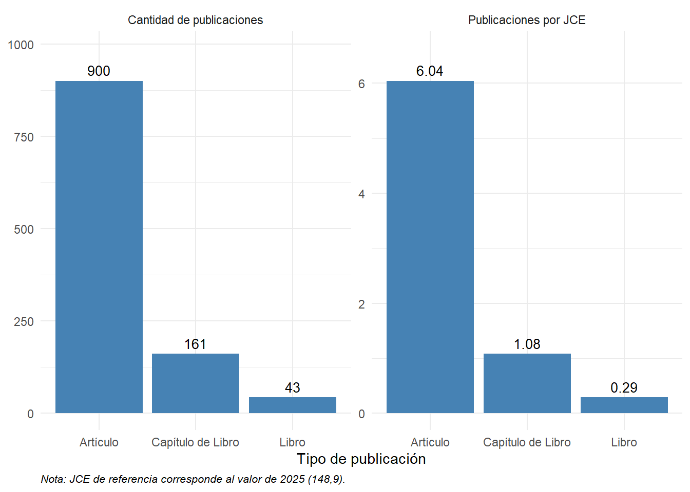
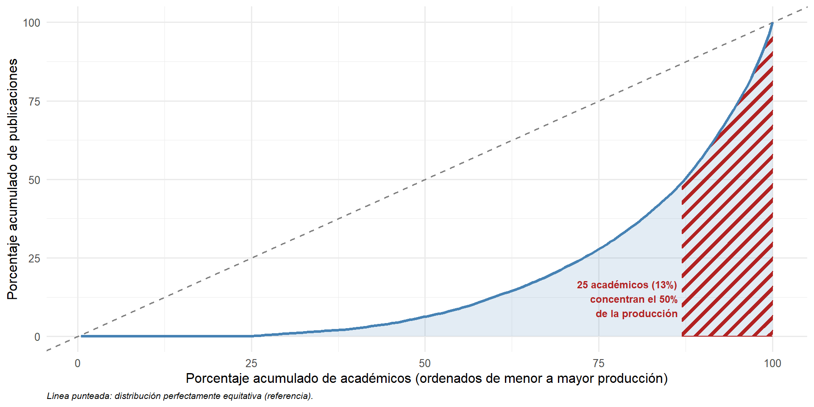
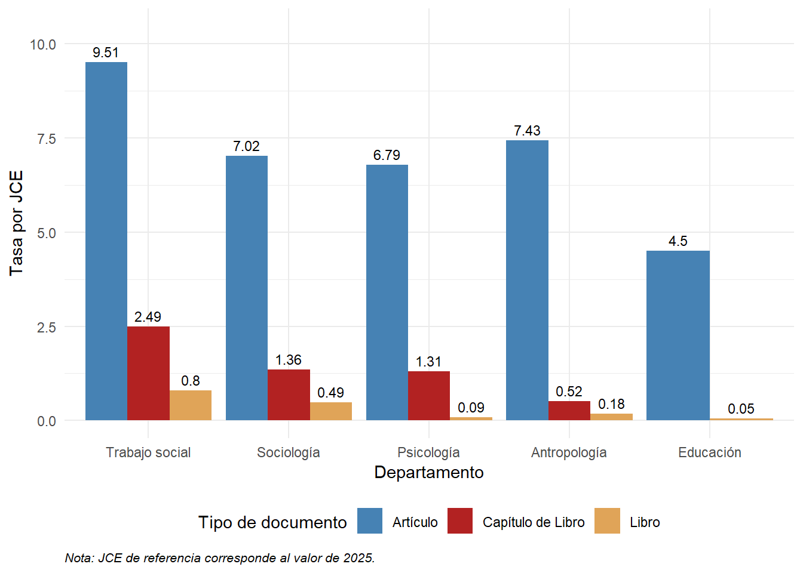
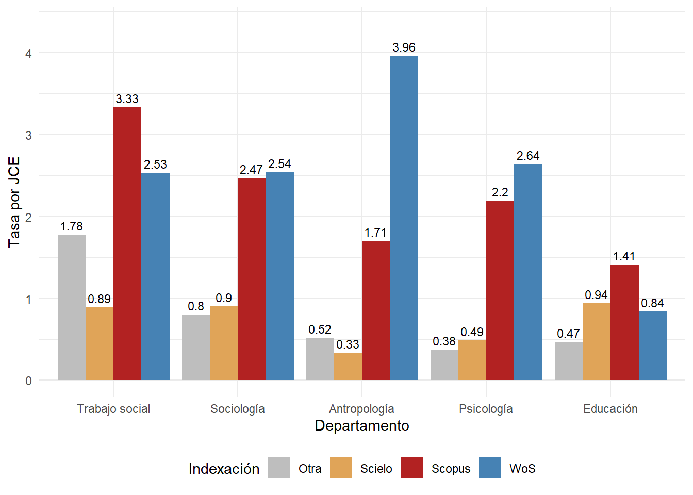
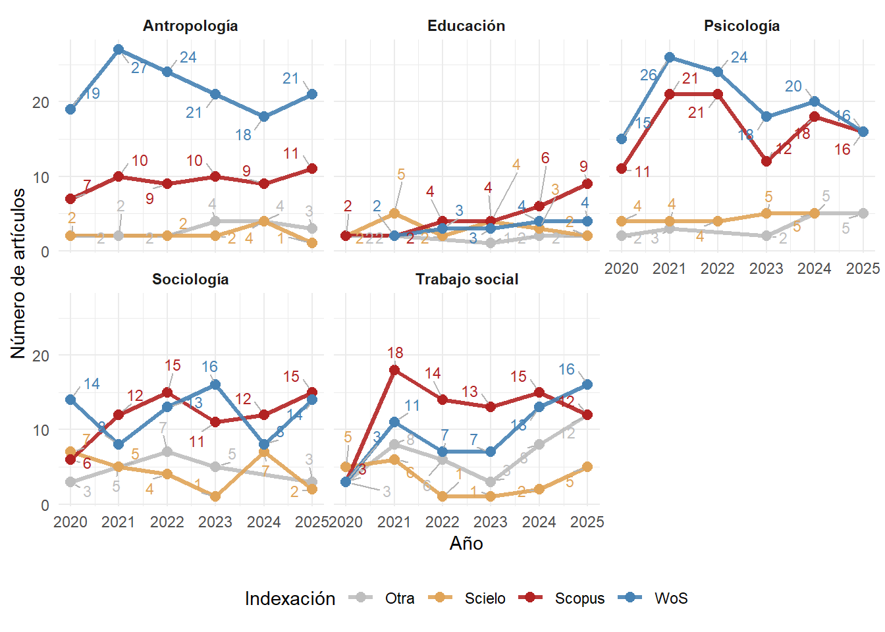
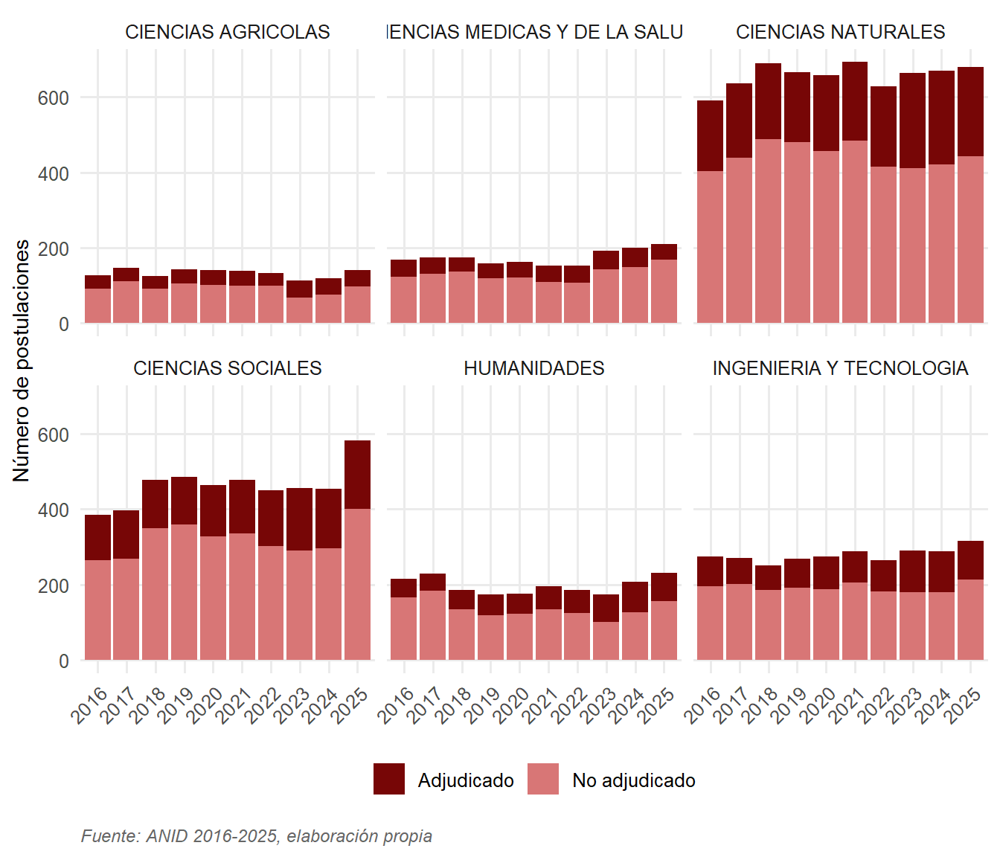
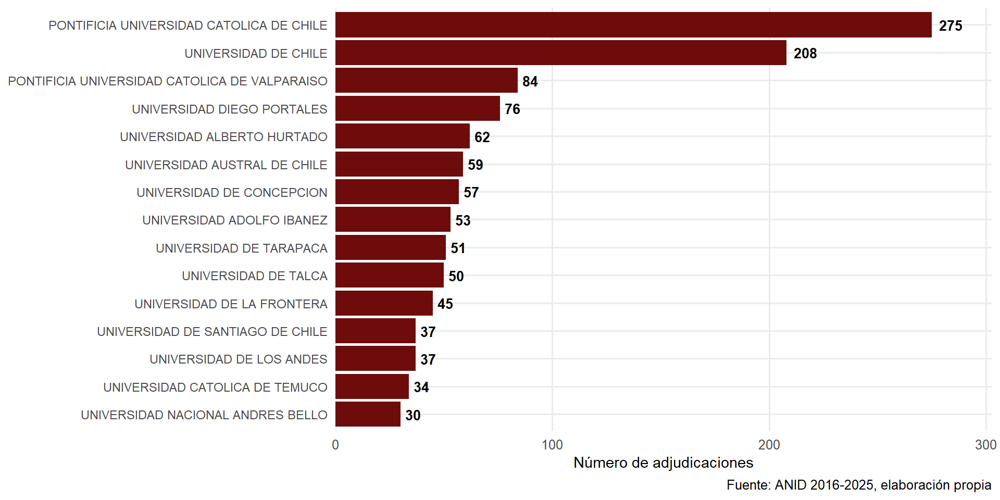
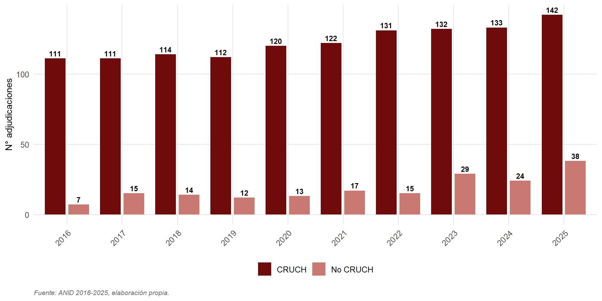

| Departamento | Artículos | Total de citas | Índice h |
|---|---|---|---|
| Antropología | 176 | 1186 | 16 |
| Educación | 34 | 88 | 5 |
| Psicología | 207 | 2165 | 22 |
| Sociología | 131 | 951 | 15 |
| Trabajo social | 121 | 662 | 11 |
Presentación Informes
Dirección de Investigación y Publicaciones – FACSO
julio, 2026
Informe de Publicaciones FACSO
Propósito
Este estudio corresponde a un análisis cuantitativo descriptivo que caracteriza el volumen, la composición y el impacto de la producción científica de la Facultad de Ciencias Sociales de la Universidad de Chile. El período de referencia corresponde a 2020-2025, con un universo de 1.162 publicaciones únicas identificadas.
Datos
La construcción de la base combinó múltiples fuentes:
- SEPA-VID
- API de ORCID
- Bases de datos de Web of Science, Scopus, Scielo y SCImago
- Académicos con nombramiento vigente al 31 de diciembre de 2025
Resultados

Cantidad de tipo de publicaciones totales y por JCE

Curva de Lorenz Publicaciones FACSO

Publicaciones por Departamento y JCE

Publicaciones por Departamento y tipo de indexación

Publicaciones por Departamento y tipo de indexación 2020-2025
El índice h agregado no equivale a la suma ni al promedio de los índices individuales: indica cuántas publicaciones \(h\) del total analizado cuentan con \(h\) o más citas. El Índice h a nivel Facultad es de 30

Cantidad y proporción de publicaciones en revistas Q1 y Q2 por JCE por Departamento
Conclusiones
Fortalezas: Volumen alto de productividad académica, estable en los últimos años, con visibilidad en sus áreas de conocimiento y alcance internacional
Desafíos: Alta concentración de la producción en una proporción pequeña del cuerpo académico. Profesores asistentes y académicos mayores de 60 años muestra cifras más bajas en la mayoría de los indicadores
Informe de Fondos ANID en Ciencias Sociales
Objetivos
Caracterizar las postulaciones y adjudicaciones FONDECYT (Iniciación y Regular) y Núcleos e Institutos Milenio en Ciencias Sociales entre 2016 y 2025.
Examinar las asimetrías estructurales del sistema a partir de cuatro dimensiones: género, grupo de estudio, institución patrocinante y macrozona.
Método
Bases de datos (repositorio público ANID + reconstrucción manual desde PDFs oficiales):
base_fondecyt_completa: 2016-2025, todas las áreas OCDE.base_fondecyt_sociales_merge_monto: 8.603 postulaciones de Ciencias Sociales.adjudicacion_milenio_limpia_sociales: 24 adjudicaciones en CS (2016-2022).
Resultados

Postulaciones Fondecyt Regular por área OCDE
Monto promedio adjudicado por grupo de evaluación Fondecyt Regular

Instituciones líderes (Top 15)

Adjudicación CRUCH/No CRUCH
Conclusiones
Expansión sostenida con techos competitivos: la demanda crece, pero las tasas de adjudicación se mantienen estables. Sistema con techo presupuestario rígido.
Brechas de género diferenciadas por instrumento: paridad creciente en Iniciación, brecha estancada en Regular (38% mujeres). Opera en la postulación, no en la evaluación.
Asimetría institucional estructural: CRUCH concentra 77-81% de adjudicaciones. Doble estratificación (vertical CRUCH y horizontal público/privado).
Concentración territorial creciente: Santiago captura la mayor parte del incremento. Milenio en CS opera como fenómeno casi exclusivamente santiaguino.
Una paradoja que requiere ser pensada
El techo presupuestario de FONDECYT en Ciencias Sociales se ha mantenido prácticamente constante en 10 años, mientras las postulaciones crecen sostenidamente.
El sistema ha optado por mantener estable el número de adjudicaciones — una aparente normalidad que puede estar ocultando el ajuste real.
Hipótesis interpretativa (no probada con estos datos): el ajuste se absorbería vía montos reales más bajos, erosión silenciosa de tasas y traslado de costos hacia quienes no tienen afiliación tradicional, trayectoria consolidada o ubicación metropolitana.

DIP – FACSO